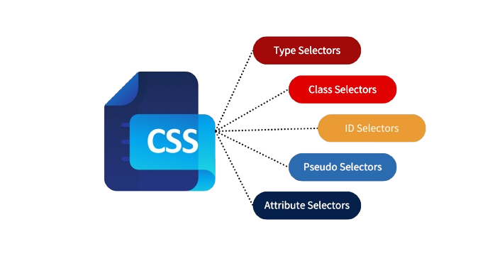
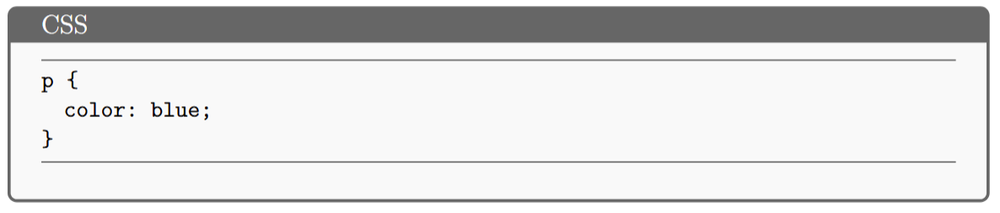
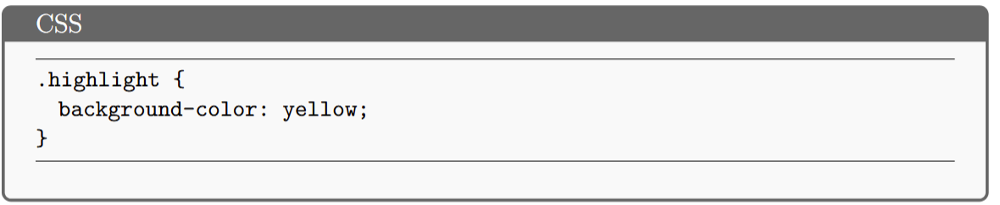
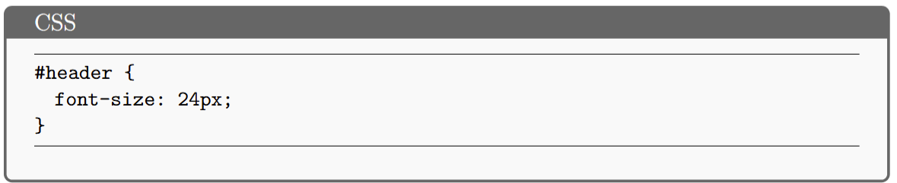
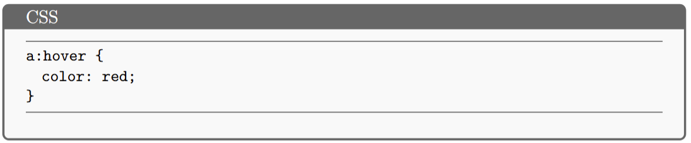
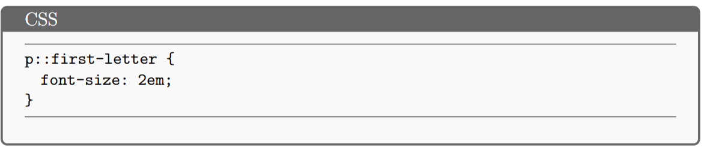
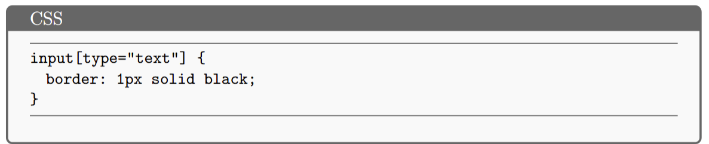
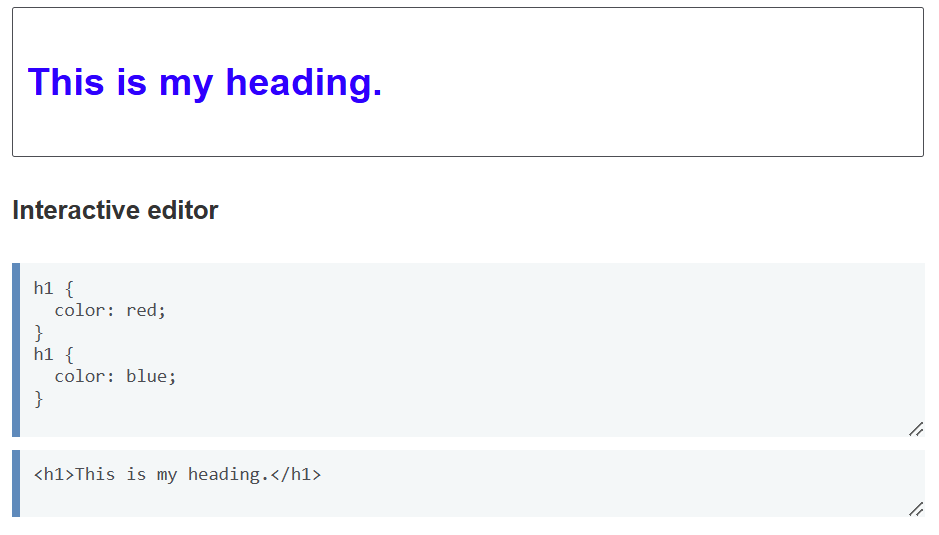
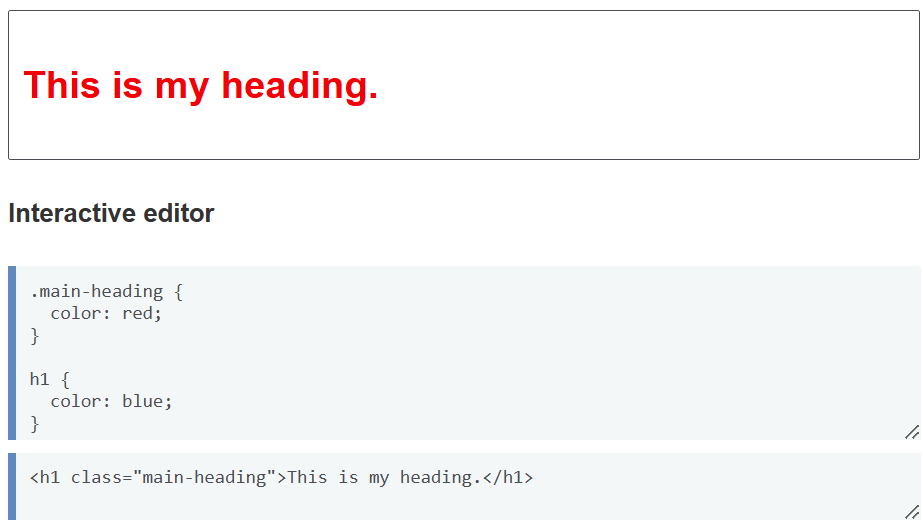
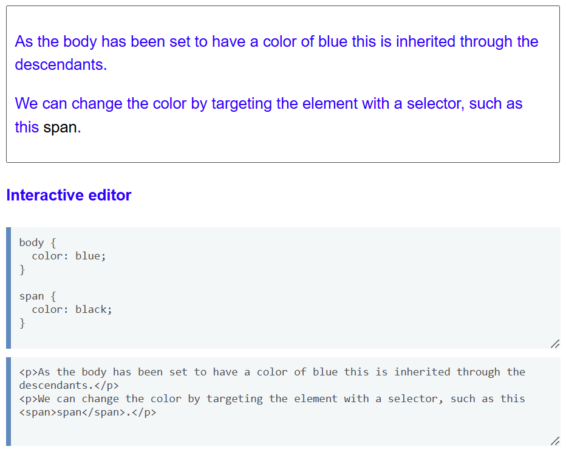

Cấu trúc của CSS
Bộ chọn CSS (CSS selectors)
Bộ chọn CSS là phần đầu tiên của mỗi quy tắc CSS. Nó xác định phần tử HTML nào sẽ được áp dụng phong cách. Có nhiều loại bộ chọn khác nhau:
- Bộ chọn loại (Type selectors): Là bộ chọn được sử dụng để định kiểu cho tất cả các phần tử HTML dựa trên tên thẻ của chúng mà không phân biệt chữ hoa, chữ thường. 
- Bộ chọn lớp (Class selectors): Chọn các phần tử dựa trên thuộc tính class. Nhạy cảm với chữ hoa chữ thường và bắt đầu bằng ký tự dấu chấm ".". 
- Bộ chọn ID (ID selectors): Chọn một phần tử duy nhất dựa trên thuộc tính id. Bắt đầu bằng dấu "#" và nhạy cảm với chữ hoa chữ thường. 
- Các lớp giả và phần tử giả (Pseudo-classes and Pseudo-elements):
- Lớp giả (Pseudo-classes): Áp dụng cho phần tử dựa trên trạng thái đặc biệt hoặc sự tương tác của người dùng. 
- Phần tử giả (Pseudo-elements): Định kiểu cho một phần cụ thể của phần tử, chẳng hạn như dòng đầu tiên hoặc chữ cái đầu tiên. 
- Bộ chọn thuộc tính (Attribute selectors): Chọn các phần tử HTML dựa trên sự hiện diện hoặc giá trị của thuộc tính, bất kể loại thẻ. 
Thuộc tính CSS (CSS Properties)
Nền (Backgrounds) trong CSS:
| Thuộc tính | Mô tả |
|---|---|
| background | Thuộc tính viết tắt cho tất cả các thuộc tính nền. |
| background-color | Đặt màu nền. |
| background-image | Đặt hình ảnh làm nền. |
| background-attachment | Kiểm soát cuộn nền (scroll, fixed, local). |
Viền (Borders) trong CSS:
| Thuộc tính | Mô tả |
|---|---|
| border | Thuộc tính viết tắt để thiết lập độ rộng, kiểu, và màu sắc của viền. |
| border-top | Định nghĩa viền cho cạnh trên. |
| border-color | Đặt màu sắc của viền. |
| border-radius | Bo tròn các góc của hộp. |
Xử lý các hướng văn bản khác nhau (Handling Different Text Directions)
- CSS hỗ trợ văn bản từ phải sang trái và từ trên xuống dưới.
- Chế độ viết với
writing-mode:horizontal-tb: Từ trên xuống dưới.vertical-rl: Từ phải sang trái.vertical-lr: Từ trái sang phải.
- Block và inline hiển thị khác nhau theo chế độ viết.
- Thuộc tính logic thay đổi theo hướng văn bản.
Physic: width↔Logic: inline-size(Thay thế cho thuộc tính width trong chế độ viết ngang)Physic: height↔Logic: block-size(Thay thế cho thuộc tính height trong chế độ viết ngang)

Nội dung tràn và kích thước trong CSS (Overflowing content and Sizing items in CSS)
- Nội dung tràn xảy ra khi phần tử không đủ kích thước để chứa nội dung.
- Thuộc tính
overflowđiều chỉnh hiển thị nội dung tràn:visible,hidden,scroll,auto. - Quy định kích thước phần tử bằng các thuộc tính:
width,height,min-width,max-width,min-height,max-height. - Sử dụng đơn vị: pixel (px), phần trăm (%), viewport (vw, vh) để định nghĩa kích thước.
- Box-sizing xác định cách tính kích thước:
content-boxvàborder-box.
Giá trị và đơn vị trong CSS (CSS Values and Units)
Giá trị trong CSS: xác định thuộc tính của phần tử HTML, tạo giao diện người dùng hấp dẫn.
- Phân loại giá trị bao gồm:
- Giá trị từ khóa (auto, inherit, none).
- Giá trị màu (tên màu, Hex, RGB, RGBA).
- Giá trị độ dài (px, em, rem, %).
- Giá trị thời gian (s, ms).
- Giá trị góc (deg, rad, turn).
Đơn vị trong CSS: chia thành đơn vị tuyệt đối (px, cm, in) và tương đối (%, em, rem, vw, vh, vmin, vmax).
Cơ chế hoạt động của CSS
Xếp tầng (Cascade): kiểm soát quy tắc nào được áp dụng khi có xung đột. Quy tắc được định nghĩa sau sẽ được ưu tiên nếu hai quy tắc có cùng độ ưu tiên.
Đặc hiệu (Specificity): là thuật toán xác định quy tắc nào được áp dụng dựa trên mức độ cụ thể của selector. Selector cho class có độ ưu tiên cao hơn selector cho element.
Kế thừa (Inheritance): cho phép một số thuộc tính CSS của phần tử cha tự động áp dụng cho các phần tử con, nhưng không phải tất cả các thuộc tính đều kế thừa.
Mô hình hộp (Box model): dùng để xác định cách trình duyệt tính toán kích thước và không gian của các phần tử HTML. Mô hình hộp bao gồm hai loại hộp chính:
- Hộp dạng khối (block boxes). Ví dụ:
<h1>,<p>mặc định là block. - Hộp dạng dòng (inline boxes). Ví dụ:
<a>,<span>mặc định là inline.
Mô hình hộp CSS bao gồm bốn phần chính:
- Content box: Vùng chứa nội dung của bạn, kích thước có thể được thiết lập bằng
widthvàheight. - Padding box: Phần đệm bao quanh nội dung.
- Border box: Viền bao quanh phần đệm và nội dung.
- Margin box: Khoảng cách ngoài cùng, giữa hộp và các phần tử khác.

Trong đó:
- Margin: Khoảng không gian bên ngoài hộp, có thể có giá trị âm hoặc dương, tạo khoảng trống giữa các phần tử.
- Padding: Khoảng cách giữa nội dung và viền, không thể có giá trị âm.
- Border: Viền bao quanh padding và nội dung, có thể tùy chỉnh kích thước và kiểu.